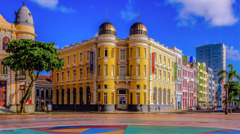
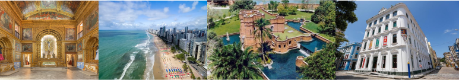

Marco Zero
É o ponto inicial da cidade e um dos cartões-postais mais famosos. Fica no bairro do Recife Antigo e é onde acontecem muitos eventos culturais.

Outros lugares em Recife
É o ponto inicial da cidade e um dos cartões-postais mais famosos. Fica no bairro do Recife Antigo e é onde acontecem muitos eventos culturais.

Outros lugares em Recife